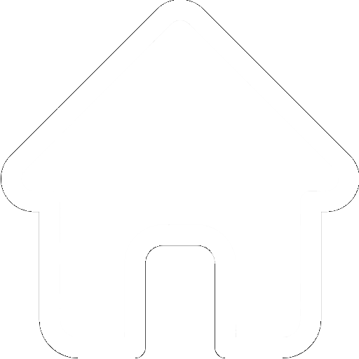

ℹ
Информация о приложении

Вернуться на главную
Ссылки на авторов стороннего контента
Многие картинки (иконки, такие как иконка меню, фотография еды, которую я использую в качестве фона) взяты с других сайтов, поэтому здесь я указываю их авторов.
Автор иконки сайта (фавикона) Автор изображения, которое я использую как фон Автор иконки "инфо", которую я использую для справки по ингредиентам Автор иконки "меню" Ссылка на автора иконки "закрыть" (используется при показе рецептов)
Ссылки на сайты, с которых я взяла рецепты
Кроме того, все рецепты тоже взяты из Интернета. Поэтому я прикрепляю ссылки на сайты, откуда взяты рецепты.
Lafoy Eda.ru Russian food